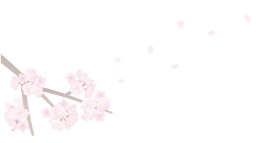
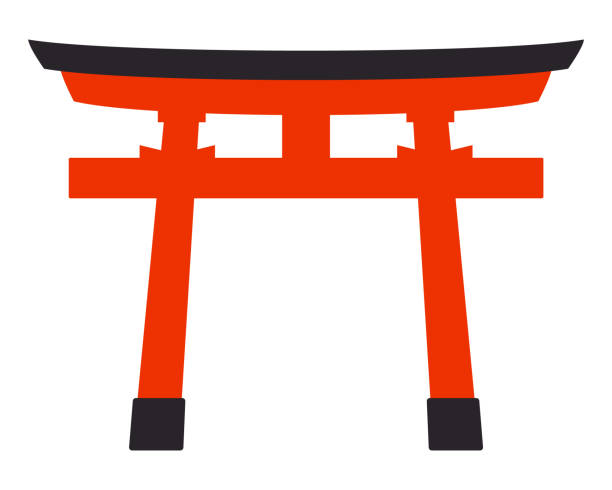

Cours de Japonais
Recette de Cuisine
S'expatrier au Japon
Nouvelles du Japon
Passion Japon
Au Japon, comme à la maison
Apprenez le Japonais
Ecriture
Lecture
Vocabulaire
Grammaire


Cuisinez au Japon
Plats Chauds
Plats Froids
Dessert
Sauces
Voyagez au Japon
Tourisme
Transport
Hôtel
Restaurant
Expatriez vous au Japon
Les visas
Trouver un emploi
Trouver un logmenent
Communiquer au Japon